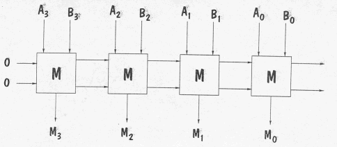
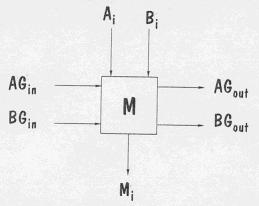
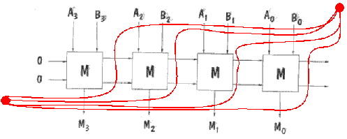
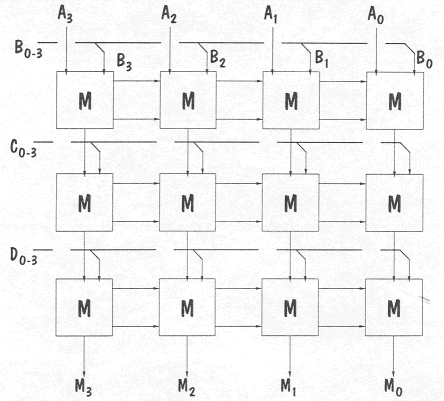
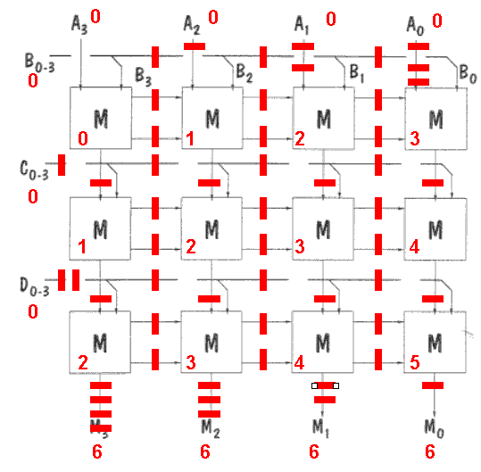
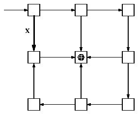
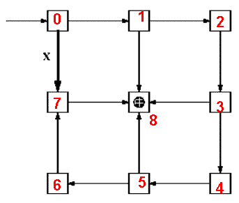

Problem 7.
Circuits Maximus, Inc. makes circuits which compute the maximum of two unsigned
binary numbers. They are constructed using combinational 1-bit Maximizes modules
which are cascaded to deal with longer words, as shown below:

This diagram show a 4-bit Maximizer chain which computes at the M outputs the
larger of the A or B input operands. Each Maximizer module takes the Ith bit
of each of two binary operands, A and B, as well as comparison outputs from the
next higher-order Maximizer module in a chain, as shown below:

A "1" on either of the inputs AGin and BGin from the next higher-order module
signals that A or B, respectively, is greater; both inputs are zero if the higher-order bits
are identical. The M module computes the output values AGout and BGout from AGin, BGin,
Ai and Bi and sends these outputs values to the next lower-order M module. It also
passes either Ai or Bi as the Mi output, denoting the Ith bit of the maximum of A
and B.
An implementation has been developed for the M module that has 10ns propagation
delay and a 2ns contamination delay.
-
Assuming that use of ideal registers, mark the previous diagram to show a 4-bit
Maximizer pipelined for maximum throughput.

-
To compute the maximum value of N inputs (N > 2), the following structure is
proposed:

In this circuit, the maximum of four 4-bit unsigned numbers is
computed and appears at the output M3..M0.
What is the latency and throughput of this combinational circuit,
assuming that each M module has a propagation delay of 10ns?
The longest path from inputs to outputs passes through 6 M
modules, so the latency is 60 and the throughput is 1/60.
-
Show how this circuit can be pipelined from maximum throughput
using a minimum number of pipeline stages. Remember to include a
register at each output.
The solution below uses a different technique for pipelining
a circuit. Start by labeling each module with its maximum
"distance" from the inputs, i.e., the largest number of
components that have to be traversed on some path from the
inputs to the module in question. Label all outputs with the
length (in modules) of the longest path from input to output
label each input with "0". The number of pipeline
registers required on each wire is the difference between
the label at the start of the arrow and the end of the arrow.
A common mistake: forgetting to add the necessary pipeline
registers on the input and output arrows.

Problem 8.
The following combinational circuit takes a single input
and produces a visual output by lighting the light on the center
component module.

Consider the result of pipelining the above circuit for maximum
throughput, using the minimum number of registers necessary. The
result would be a pipeline such that input asserted during clock
period I produces the proper output on the light during clock
period I+K (we want minimal K which gives maximal throughput).
-
How many registers should appear on the bold wire (marked X) in
the pipelined version of the above circuit?
Using the pipelining technique described in the previous
problem, we can see from the labels that 7 registers would
be required on the wire marked X:
